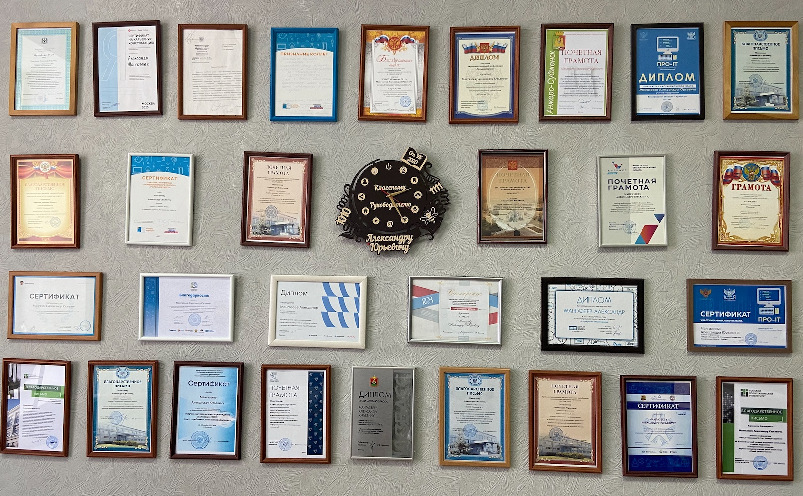

О себе
Учитель информатики нетипового муниципального бюджетного общеобразовательного учреждения Анжеро-Судженского городского округа «Гимназия №11»
Окончил Кемеровский государственный университет по специальности «Прикладная информатика в экономике»; ГОУДПО (ПК)С КРИПКиПРО по программе «Педагогика, психология и методика преподавания школьных дисциплин» с правом на ведение профессиональной деятельности в сфере педагогики, психологии и методики преподавания информатики
“Обучать – значит вдвойне учиться”, – с таким девизом иду по жизни. Я убежден, что лучший способ мотивации обучающихся – это личный пример. Постоянно работаю над собой, учусь, ищу новые идеи, увлекая за собой учеников, родителей и коллег. Особое внимание на уроках и внеурочных занятиях уделяю многообразию IT-индустрии, формированию навыков в сфере цифровой безопасности.
Учителей информатики в школе принято считать самыми продвинутыми специалистами в сфере информационных технологий. Ведь именно мы знакомим детей с устройством компьютера, учим их программировать и обучаем информационным технологиям, объясняем алгоритмы эффективной работы с информацией с помощью электронных помощников. Не секрет, что IT-сфера стремительно развивается, и чтобы учителю быть мастером своего дела, ему необходимо следить за изменениями IT-индустрии.
Моё Хобби
Лето - время каникул. А для меня лето - это смена рода деятельности. Пчеловодство - моё хобби. Свободное летнее время я посвещаю пчелам. Издревне пчеловодство считалось не только интересным, но и полезным видом деятельности. Неоценимую пользу пчелы приносят окружающей среде.


Методическая копилка
Информационные технологии вовлекают учащихся в учебный процесс, способствуя наиболее широкому раскрытию их способностей, активизации умственной деятельности. В своей педагогической практике я использую возможности готовых информационных ресурсов и создаю собственные информационные продукты.
Канал youtube
YouTube канал «Информатика на 5», ставший особенно востребованным во время дистанционного обучения. Невозможно, на мой взгляд, в современных условиях обойтись без создания видеороликов.
ссылка: информатика на 5
Профиль TikTok
Для привлечения учащихся (и всех желающих) к информационным технологиям в феврале 2020 года мной был создан профиль в социальной сети Tik Tok @infa_na_5
ссылка: информатика на 5Telegram канал
Telegram канал, Информатика на 5, где показаны результаты работы, направленной на саморазвитие и самообразование, служит своеобразным мотиватором для учащихся.
ссылка: информатика на 5ДО НМБОУ "Гимназия №11"
С 2013 года в НМБОУ «Гимназия №11» функционирует платформа «Система дистанционного обучения НМБОУ «Гимназия №11».
ссылка: Система дистанционного обучения НМБОУ "Гимназия №11"GitHub
Для реализации проектов осваиваем со школьниками сервис github.com и технологию git (распределенная система управления версиями).
ссылка: Профиль GitHubinformatics
Для подготовки школьников к программированию использую возможности сайта informatics. Задачи на данном сайте проверяются автоматически, не требуя помощи учителя.
ссылка: Мои курсы на informaticsОбразование
2014
Кемеровский государственный университет, Кемерово
Преподаватель высшей школы
2013
Кузбасский региональный институт повышения квалификации и переподготовки работников образования, Кемерово
Педагогика, психология и методика преподавания информатики
2008
Кемеровский государственный университет, Кемерово
факультет информатики экономики и математики
специальность информатик-экономист
Курсы повышения квалификации
Высоким результатам педагогической деятельности способствует своевременное повышение квалификации, участие в профессиональных конкурсах, семинарах, активное участие в практикумах, семинарах, педагогических советах, проводимых на школьном, городском, областном уровнях.
- 2021 г. – обучение в Пизанском университете, г. Пиза, Италия (Università di Pisa) в рамках совместной образовательной программы студенческого обмена в рамках Erasmus+ с применением дистанционных технологий
- 2021 г. – Udemy «C++ GOF Паттерны проектирования»
- 2020 г. – АНО «Платформа новой школы» по программе повышения квалификации «Персонализация образования в условиях цифровой трансформации в обществе»
- 2020 г. – АНО ДПО «Корпоративный университет Сбербанка» по курсу Основы решения алгоритмических задач
- 2020 г. – АНО ДПО «Корпоративный университет Сбербанка» по курсу Прикладной анализ данных (Big Data I)
- 2020 г. – АНО ДПО «Корпоративный университет Сбербанка» по курсу Основы Python
- 2020 г. – АНО ДПО «Корпоративный университет Сбербанка» по курсу Современные цифровые технологии
- 2020 г. – АНО ДПО «Корпоративный университет Сбербанка» по курсу Основы программирования
- 2019 г. – «АНО ДПО МИПКиПП» «Теория и практика преподавания учебного предмета "Информатика" с учетом ФГОС ООО»
- 2019 г. – ООО «Центр онлайн-обучения Нетология-групп» «Преподавание курса информатики в 10-11 классах»
- 2019 г. – «ГБУ ДПО КРИРПО» «Информационная безопасность участников образовательного процесса в условиях цифровизации»
- 2019 г. – «КГТУ им. Т.Ф. ГОРБАЧЕВА ИНСТИТУТ КОРПОРАТИИВНОГО ОБУЧЕНИЯ» «Реализация образовательных программ углубленного изучения естественно-научных и технических дисциплин в системе ДО»
- 2019 г. – «АКАДЕМИЯ ВЕРСТКИ» «WEB START»
- 2018 г. – ООО "Центр онлайн-обучения Нетология-групп" «Подготовка к олимпиадам по программированию»
Достижения
Опыт работы в сфере информационных технологий был представлен на разных уровнях. Регулярно принимаю участия в конкурсах профессионального мастерства. Привлекая учащихся к участию в олимпиадах, стараюсь донести до каждого школьника факт, что олимпиада ни в коей мере не является элитарным мероприятием, что многие задачи олимпиад доступны для понимания каждому школьнику, интересующемуся предметом.
Некоторые значимые достижения:
- победитель областного конкурса "IT-образование Кузбасса ХХI века" в номинации "STEAM-педагог" 2022г.
- сертификат участника полуфинала Всероссийского профессионального конкурса «Учитель будущего» 2020 г
- лауреат конкурса «Лучший лектор страны» 2018 г.